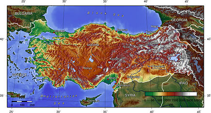
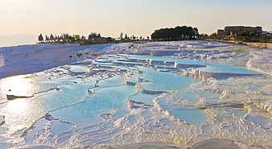
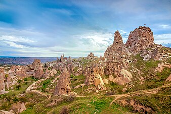

Geography
Turkey bridges Southeastern Europe and Western Asia. Asian Turkey, which includes 97% of the country's territory, is separated from European Turkey by the Bosphorus, the Sea of Marmara, and the Dardanelles. European Turkey comprises 3% of the country's territory. Turkey covers an area of 783,562 square kilometres (302,535 square miles), of which 755,688 square kilometres (291,773 square miles) is in Asia and 23,764 square kilometres (9,175 square miles) is in Europe. The country is encircled by seas on three sides: the Aegean Sea to the west, the Black Sea to the north and the Mediterranean Sea to the south. Turkey also contains the Sea of Marmara in the northwest.
Turkey is divided into seven geographical regions: Marmara, Aegean, Black Sea, Central Anatolia, Eastern Anatolia, Southeastern Anatolia and the Mediterranean. As a general trend, the inland Anatolian Plateau becomes increasingly rugged as it progresses eastward. Pamukkale terraces are made of travertine, a sedimentary rock deposited by mineral water from hot springs. The area is famous for a carbonate mineral left by the flowing of thermal spring water.
East Thrace, the European portion of Turkey, is located at the easternmost edge of the Balkans. It forms the border between Turkey and its neighbors Greece and Bulgaria. The Asian part of the country mostly consists of the peninsula of Anatolia, which consists of a high central plateau with narrow coastal plains, between the Köroğlu and Pontic mountain ranges to the north and the Taurus Mountains to the south. The Lakes Region contains some of the largest lakes in Turkey such as Lake Beyşehir and Lake Eğirdir.
The Eastern Anatolia Region mostly corresponds to the western part of the Armenian highlands (the plateau situated between the Anatolian Plateau in the west and the Lesser Caucasus in the north) and contains Mount Ararat, Turkey's highest point at 5,137 metres (16,854 feet), and Lake Van, the largest lake in the country. Eastern Turkey has a mountainous landscape and is home to the sources of rivers such as the Euphrates, Tigris and Aras. The Southeastern Anatolia Region includes the northern plains of Upper Mesopotamia.
Earthquakes happen frequently in Turkey. Almost the entire population lives in areas with varying seismic risk levels, with around 70% in highest or second-highest seismic areas. Anatolian plate is bordered by North Anatolian Fault zone to the north; East Anatolian Fault zone and Bitlis–Zagros collision zone to the east; Hellenic and Cyprus subduction zones to the south; and Aegean extensional zone to the west. After 1999 İzmit and 1999 Düzce earthquakes, North Anatolian Fault zone activity "is considered to be one of the most dangerous natural hazards in Turkey". 2023 Turkey–Syria earthquakes were the deadliest in contemporary Turkish history. Turkey is sometimes unfavorably compared to Chile, a country with a similar developmental level that is more successful with earthquake preparedness.
Biodiversity
Turkey's position at the crossroads of the land, sea and air routes between the three Old World continents and the variety of the habitats across its geographical regions have produced considerable species diversity and a vibrant ecosystem. Out of the 36 biodiversity hotspots in the world, Turkey includes 3 of them. These are the Mediterranean, Irano-Anatolian, and Caucasus hotspots. In the 21st century, threats to biodiversity include desertification from climate change in Turkey.
The forests of Turkey are home to the Turkey oak. The most commonly found species of the genus Platanus (plane) is the orientalis. The Turkish pine (Pinus brutia) is mostly found in Turkey and other east Mediterranean countries. Several wild species of tulip are native to Anatolia, and the flower was first introduced to Western Europe with species taken from the Ottoman Empire in the 16th century.
There are 40 national parks, 189 nature parks, 31 nature preserve areas, 80 wildlife protection areas and 109 nature monuments in Turkey such as Gallipoli Peninsula Historical National Park, Mount Nemrut National Park, Ancient Troy National Park, Ölüdeniz Nature Park and Polonezköy Nature Park. The Northern Anatolian conifer and deciduous forests is an ecoregion which covers most of the Pontic Mountains in northern Turkey, while the Caucasus mixed forests extend across the eastern end of the range. The region is home to Eurasian wildlife such as the Eurasian sparrowhawk, golden eagle, eastern imperial eagle, lesser spotted eagle, Caucasian black grouse, red-fronted serin, and wallcreeper.
The Anatolian leopard is still found in very small numbers in the northeastern and southeastern regions of Turkey. The Eurasian lynx, the European wildcat and the caracal are other felid species which are found in the forests of Turkey. The Caspian tiger, now extinct, lived in the easternmost regions of Turkey until the latter half of the 20th century. Renowned domestic animals from Ankara include the Angora cat, Angora rabbit and Angora goat; and from Van Province the Van cat. The national dog breeds are the Kangal (Anatolian Shepherd), Malaklı and Akbaş.

Climate
The coastal areas of Turkey bordering the Aegean and Mediterranean Seas have a temperate Mediterranean climate, with hot, dry summers and mild to cool, wet winters. The coastal areas bordering the Black Sea have a temperate oceanic climate with warm, wet summers and cool to cold, wet winters. The Turkish Black Sea coast receives the most precipitation and is the only region of Turkey that receives high precipitation throughout the year. The eastern part of the Black Sea coast averages 2,200 millimetres (87 in) annually which is the highest precipitation in the country. The coastal areas bordering the Sea of Marmara, which connects the Aegean Sea and the Black Sea, have a transitional climate between a temperate Mediterranean climate and a temperate oceanic climate with warm to hot, moderately dry summers and cool to cold, wet winters.
Snow falls on the coastal areas of the Sea of Marmara and the Black Sea almost every winter but usually melts in no more than a few days. However, snow is rare in the coastal areas of the Aegean Sea and very rare in the coastal areas of the Mediterranean Sea. Winters on the Anatolian plateau are especially severe. Temperatures of −30 to −40 °C (−22 to −40 °F) do occur in northeastern Anatolia, and snow may lie on the ground for at least 120 days of the year, and during the entire year on the summits of the highest mountains. In central Anatolia the temperatures can drop below −20 °C (−4 °F) with the mountains being even colder. Mountains close to the coast prevent Mediterranean influences from extending inland, giving the central Anatolian Plateau a continental climate with sharply contrasting seasons.
Due to socioeconomic, climatic, and geographic factors, Turkey is highly vulnerable to climate change. This applies to nine out of ten climate vulnerability dimensions, such as "average annual risk to wellbeing". OECD median is two out of ten. Inclusive and swift growth is needed for decreasing vulnerability. Turkey aims to achieve net zero emissions by 2053. Accomplishing climate goals would require large investments, but would also result in net economic benefits, broadly due to reduced imports of fuel and due to better health outcomes from lowering air pollution.